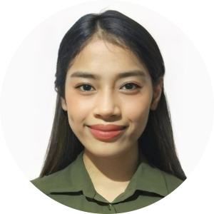

Personal Information
Email: rowela.perpetua@tup.edu.ph
Phone: 0918 674 7218
Birthday: January 11, 2003
Address: 1028 Viscaya Sreet, Brgy. 194,
Tondo, Manila,
Philippines, 1013
Skills
C Programming Language
C++ Programming Language
Simple Database Management (DOS BOX & MySQL)
Java Programming Language
HTML/CSS
Projects
Tic Tac Toe Game (C)
Typing Test (C)
Minesweeper Game (C)
ATM Bank Simulation (C++)
File Compression/Decompression (C++)
Basic Data Entry (Java and MySQL Workbench)
Basic Data Management (DOS BOX)
|
|
ROWELA G. PERPETUA
College Student
Profile
A third-year BS Information System Student at Technological University
of the Philippines - Manila, with a beginner knowledge in C, C++,
Java, HTML, CSS.
Always open for continuous learning, and creating innovative solutions
to information systems.
Education
Tertiary
Technological University of the Philippines - Manila
Bachelor of Science in Information System (BSIS)
(2022- present)
Secondary
Senior High School:
Emilio Aguinaldo College - Manila
Science, Technology, Engineering and Mathematics (STEM)
(2020-2022)
Junior High School:
Florentino Torres High School
(2016-2020)
Primary
Barrio Obrero Elementary School
(2010-2016)
Experience
YMCA Scholar (2019-2020)
Attendee of the National Leadership Seminar of YMCA (2018 & 2019)
Research in Science: Alternative (Eco-Friendly) Termite Spray using
Parsley (2022)
Executive Secretary - Emilio Aguinaldo College - Manila Senior High
School Department (2021-2022)
Event Organizer - School Pageantry (2022)
Member of COMPASS club in Technological University of the Philippines
- Manila (2024-present)
|